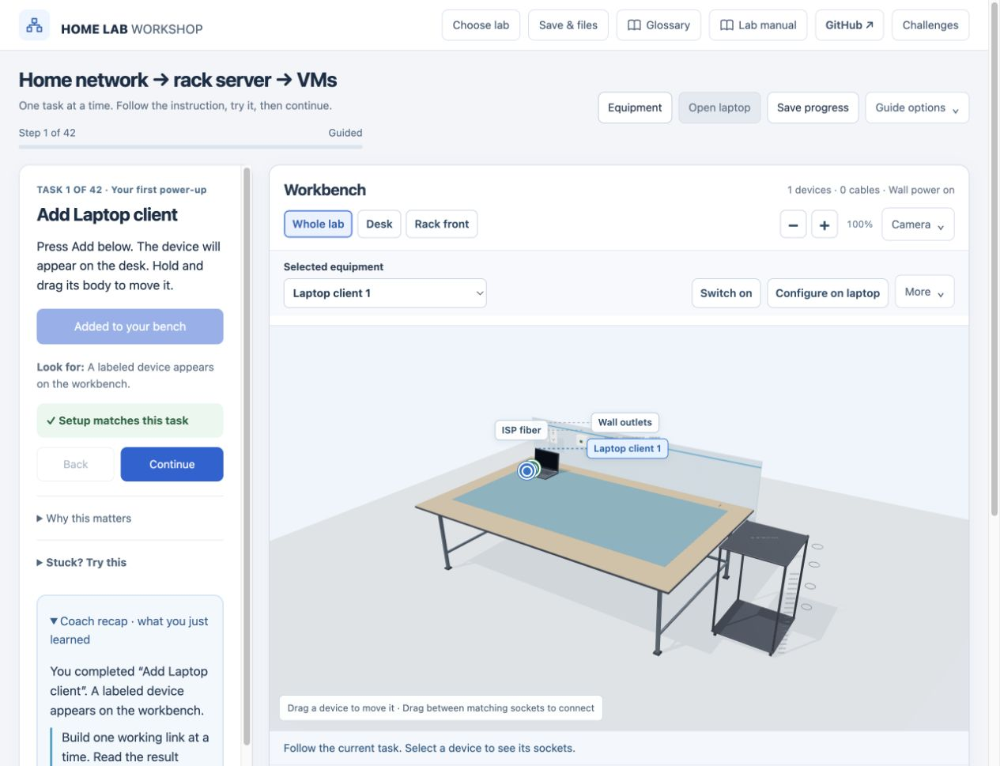
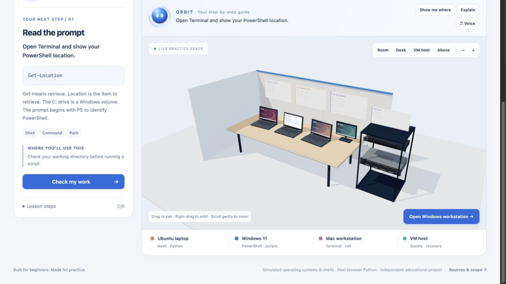
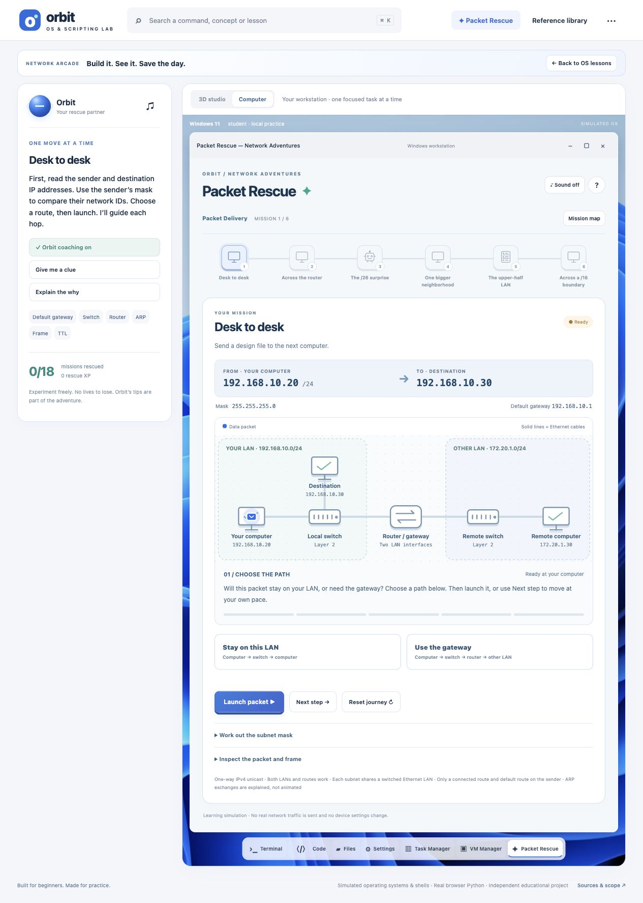

01 / BUILD
NETWORKS & INFRASTRUCTURE
Home Lab Workshop
Connect power and data cables, mount servers, configure IP settings, build RAID arrays, and test virtual networks.
Open network labA HANDS-ON IT LEARNING PORTFOLIO
A virtual workbench for real understanding. Build a network, learn a command, and follow a packet—all with a coach beside you.
Runs in your browser. No account or cloud setup required.

CHOOSE YOUR WORKSPACE
Start with the network lab if you’re new. Keep Guided mode on and follow one task at a time.
NETWORKS & INFRASTRUCTURE
Connect power and data cables, mount servers, configure IP settings, build RAID arrays, and test virtual networks.
Open network lab
02 / PRACTICEOPERATING SYSTEMS & CODE
Explore Windows, Ubuntu and macOS teaching interfaces. Practice terminals, write scripts, and recover a learning VM.
Enter the OS studio
03 / TROUBLESHOOTPLAY THE NETWORK
Build binary numbers, slice subnets, trace packet journeys, and fix broken IP settings to bring the network back.
Play Packet RescueBEHIND THE WORKSPACE
This learner-led project combines interactive software with IT fundamentals. Each workspace makes system state visible and checks the result of your actions.
Explore the code & architecture ↗Three.js scenes, Blender hardware, connector interactions and animated network paths.
Configuration checks, independent challenges, negative-case tests and explainable feedback.
Restricted shell models plus real Python in a browser worker with execution limits.
Automated tests and a checked static build run before GitHub Pages deployment.
Networks, OS interfaces, shells and virtual machines are teaching simulations. Python executes inside the browser. These are original learning tools covering selected IT and CompTIA A+ foundations, not official exam content.
Progress stays in this browser. Saves from localhost or another host do not transfer automatically. Use each lab’s export options where available.